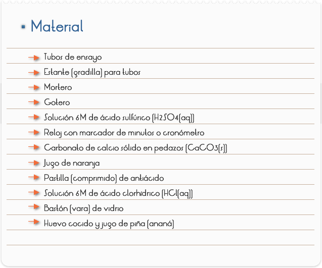
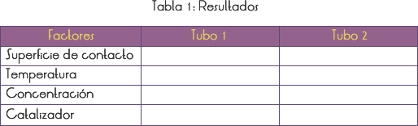
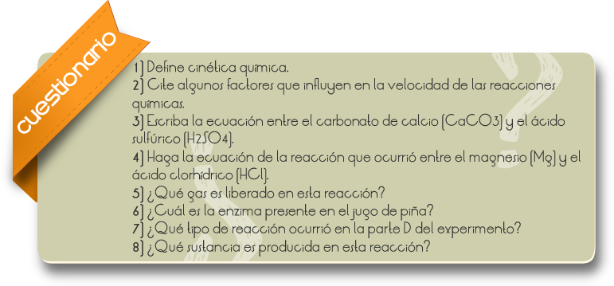
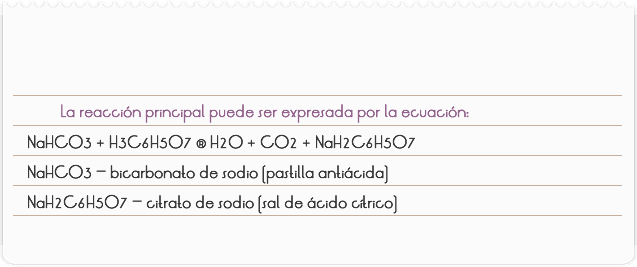
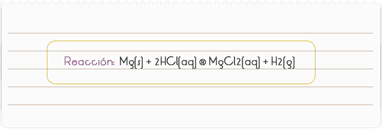
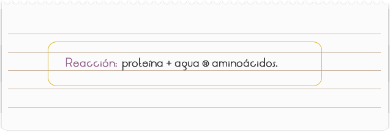

Introducción
La parte de la Química que estudia la velocidad de las reacciones y los factores que en ella influyen, denomínase Cinética Química. Son varios los factores que pueden alterar la velocidad de una reacción química, dejándola más lenta o más rápida. Controlando estos factores adecuadamente, puede efectuarse la reacción en el tiempo deseado. Ese procedimiento es muy utilizado en los laboratorios, en las industrias, etc.
Objetivo
Estudiar algunos factores que alteran la velocidad de una reacción química.

PARTE I: SUPERFICIE DE CONTACTO
2) Numerar dos tubos de ensayo y colocar en la gradilla.
3) Agregar al tubo 1, un pedazo pequeño y entero de carbonato de calcio (CaCO3(s)) (aproximadamente 1 gr.)
4) Agregar al tubo 2, la misma cantidad de polvo de CaCO3(s) en forma de polvo (pulverizado). Utilizar el mortero para realizar la pulverización.
5) Añadir 20 gotas de ácido sulfúrico (H2SO4 (aq)) a cada tubo y anotar el tiempo de reacción en la Tabla 1.
PARTE II: TEMPERATURA
1) Numerar dos tubos de ensayo, colocar 2 ml. de jugo de naranja a la temperatura ambiente en el tubo 1 y 2 ml. de jugo de naranja helado en el tubo 2.
2) Agregar ¼ de comprimido de antiácido a cada tubo y anotar el tiempo de disolución del comprimido en cada uno en la Tabla 1.
PARTE III: CONCENTRACIÓN
1) Numerar 2 tubos de ensayo, agregar 2 ml. de agua a cada tubo y colocar en la gradilla.
2) Agregar 1 gota de ácido clorhídrico (HCl(aq)) en el tubo 1, y 4 gotas en el tubo 2, revolviendo con el bastón de vidrio.
3) Colocar cantidades iguales (aproximadamente ¼ de medida) de raspaduras de magnesio (Mg(s)) en dos pedazos de papel y colocarlos simultáneamente en los tubos 1 y 2.
4) Observar en cuál tubo hay mayor producción de gas y anotar en la Tabla 1.
PARTE IV: CATALIZADOR
1) Numerar dos tubos de ensayo, agregar un pequeño pedazo de clara de huevo cocido a cada uno de ellos en la gradilla.
2) En el tubo 1, agregar 2 ml. de agua y en el tubo 2, agregar 2 ml. de jugo de piña.
3) Esperar 24 horas, verificar el aspecto de la clara del huevo en los dos tubos y anotar en la Tabla 1.


RESULTADOS Y CONCLUSIONES
PARTE I
La reacción en el tubo 2 es más rápida porque el carbonato de calcio (CaCO3(s)) en polvo presenta mayor superficie de contacto (área efectivamente expuesta al contaco con el otro reactivo), con el ácido sulfúrico (H2SO4(aq)).
La velocidad de una reacción es directamente proporcional a la superficie de contacto entre los reactivos. Reacción: CaCO3(s) + H2SO4(aq) ® CaSO4(aq) + H2O(l) + CO2(g)
PARTE II
La reacción en el tubo 2 es más lenta porque uno de los reactivos, el jugo de naranja (ácido cítrico) – H3C6H5O7, presenta contenido energético menor (temperatura más baja).
Cuanto menor la temperatura, menor es la agitación entre las moléculas de los reactivos, menor es la frecuencia de los choques efectivos.

PARTE III
En el tubo 2 hay liberación de mayor cantidad de gas de hidrógeno (H2) porque el reactivo HCl está más concentrado (hay mayor número de partículas de HCl, por unidad de volumen). La mayor concentración de los reactivos provoca una mayor frecuencia en los choques, aumentando la posibilidad de colisiones efectivas que generan los productos.

PARTE IV
En el tubo 2 ocurre la hidrólisis de las proteínas produciendo aminoácidos.

En nuestro organismo esa reacción es catalizada por las enzimas pepsina (presente en el estómago) y tripsina (presente en el intestino). La piña posee la enzima bromelina, que también cataliza esa reacción.